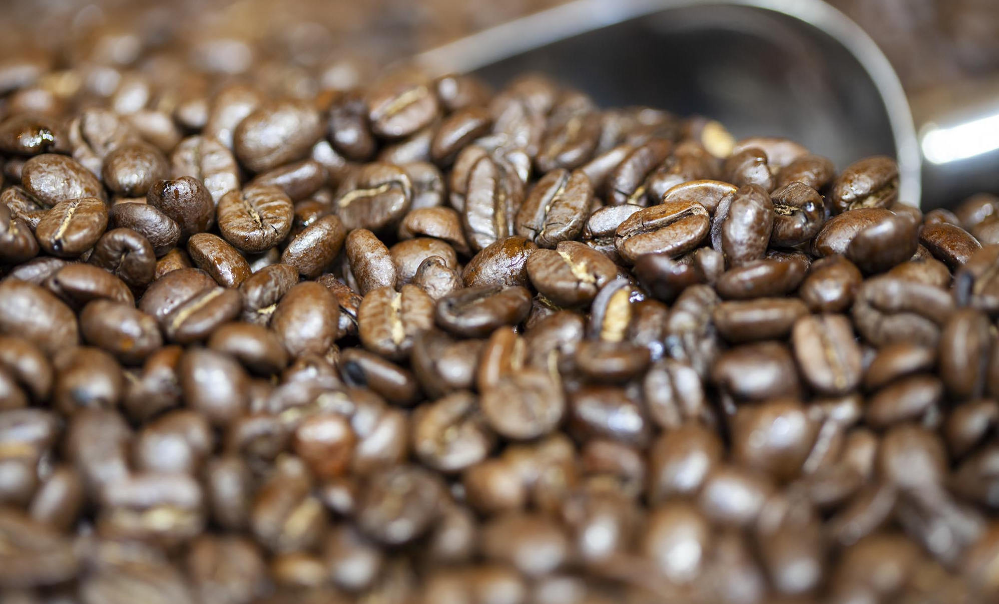
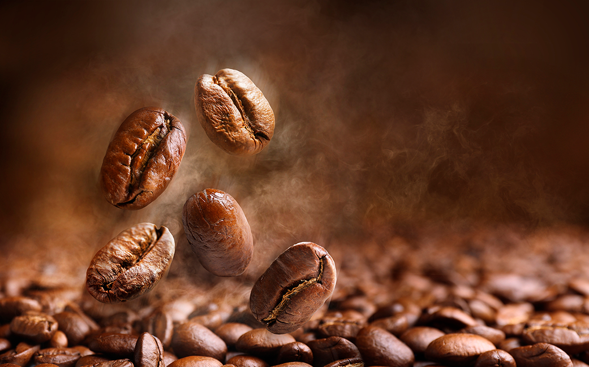
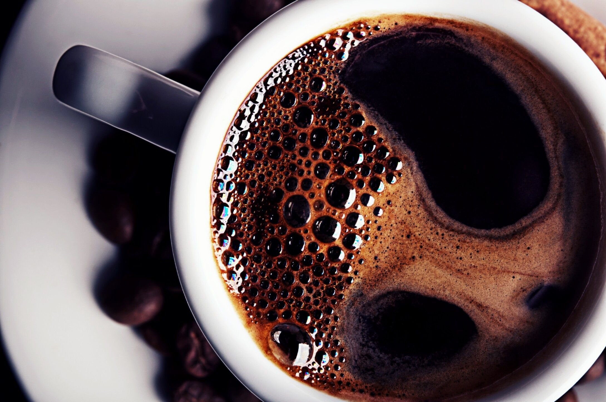

Vamos donde los mejores granos están: arriba.
Los mejores granos crecen en las altitudes más elevadas. Las noches frías y los días templados crean granos más densos. Y los granos más densos tienen sabores más profundos y complejos.

Texto del artículo que hay acá y es texto de prueba.
Existimos por el bien de todo el café
Así que si podemos ayudar a un productor a hacer crecer mejores granos, lo haremos. A todo productor, en donde sea. Para ello, contamos con centros de apoyo para los productores en los cuatro continentes donde nuestros agrónomos prueban suelos, examinan muestras y prestan asesoramiento de forma gratuita a cualquier productor de café que lo solicite.

Texto del artículo que hay acá y es texto de prueba.
Somos muy exigentes en la cosecha.
Nosotros sólo recogemos los frutos de café cuando están en su mejor momento. Rojos, maduros y perfectos. Después de eso, los ordenamos una y otra vez de acuerdo con el tamaño, el color y la densidad. ¿Cuál es la tolerancia en cuanto los defectos? Prácticamente cero. Algunas personas podrían llamarlo obsesivo. Nosotros lo llamamos un gran café.

Texto del artículo que hay acá y es texto de prueba.